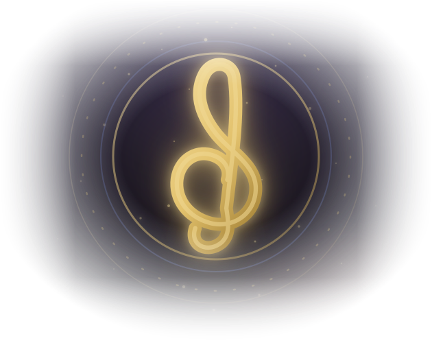

The Academy teaches you. The Dungeon tests you.
⬇ Download for Windows free · ~30 MB · no other installs neededBoth warnings — "isn't commonly downloaded" in the browser and "Windows protected your PC" when you open it — come from Microsoft SmartScreen, and neither one says anything was found wrong with the file. They mean Microsoft has not yet seen this exact installer downloaded by enough people to have an opinion about it. A small project releasing a new build every few days never accumulates that reputation, because each new file starts again from nothing.
The thing that removes it is a code-signing certificate, which costs a few hundred a year and has to be bought under a verified identity. Until this project has one, the warning stays — and anybody telling you to ignore a security warning owes you a way to check for yourself, so here is one. Every release publishes SHA256SUMS.txt. In PowerShell:
Get-FileHash .\ComposersDungeonSetup.exe -Algorithm SHA256If the hash matches the one in that file, the installer you have is byte-for-byte the one this project built. The whole source is on GitHub, and so is the build that produced it.
Once installed, you never come back here. Each time you launch it, the app checks this project's releases, verifies the download against its published checksum, and updates itself — new lessons, new dungeon areas, fixes — before the window opens. Offline? It simply starts. Your compositions, levels and streaks are never touched.
Windows 10 (1809+) or 11, 64-bit · no administrator rights needed · source on GitHub